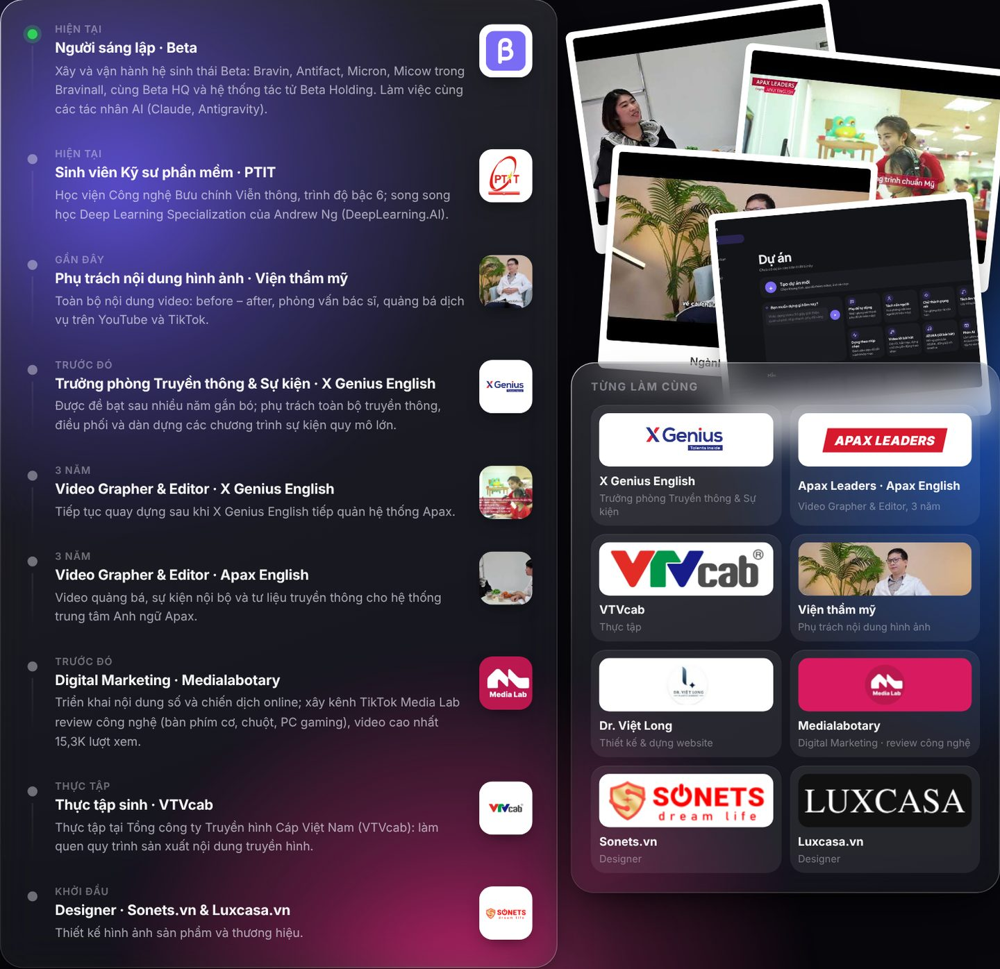
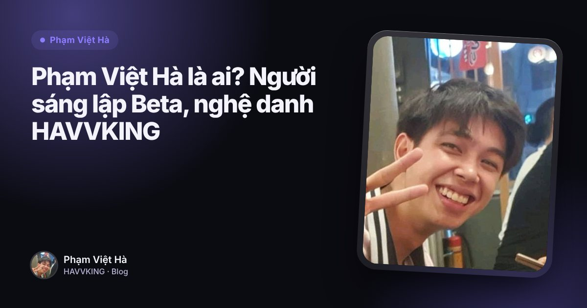

Phạm Việt Hà
Phạm Việt HàMục lục
Hành trình của Phạm Việt Hà đi qua ba chặng: thiết kế, hình ảnh và truyền thông, rồi sản phẩm AI. Câu tóm tắt trên portfolio là: thiết kế cho mình con mắt về bố cục và màu sắc; sáu năm truyền thông và sự kiện dạy mình kể một câu chuyện có nhịp điệu; giờ mình dùng cả hai để làm sản phẩm.

Chặng 1: thiết kế
Designer tại Sonets.vn và Luxcasa.vn: thiết kế hình ảnh sản phẩm và thương hiệu. Nền tảng thiết kế này đến từ chương trình Mỹ thuật đa phương tiện ở Arena Multimedia.
Chặng 2: hình ảnh, truyền thông, sự kiện
| Vị trí | Nơi làm | Công việc |
|---|---|---|
| Thực tập sinh | VTVcab (Tổng công ty Truyền hình Cáp Việt Nam) | Làm quen quy trình sản xuất nội dung truyền hình |
| Digital Marketing | Medialabotary | Nội dung số, chiến dịch online, kênh TikTok Media Lab, website bách hoá điện tử |
| Video Grapher & Editor (3 năm) | Apax English (Apax Leaders) | Video quảng bá, sự kiện nội bộ, tư liệu truyền thông |
| Video Grapher & Editor (3 năm) | X Genius English | Tiếp tục quay dựng sau khi X Genius English tiếp quản hệ thống Apax |
| Trưởng phòng Truyền thông & Sự kiện | X Genius English | Toàn bộ truyền thông, điều phối và dàn dựng sự kiện quy mô lớn |
| Phụ trách nội dung hình ảnh | Một viện thẩm mỹ | Video before–after, phỏng vấn bác sĩ, quảng bá trên YouTube, TikTok |
Ở X Genius English, Phạm Việt Hà được đề bạt lên Trưởng phòng Truyền thông & Sự kiện sau nhiều năm gắn bó. Ngoài ra, mình thiết kế và dựng website cho phòng khám thẩm mỹ drvietlong.com.
 Đọc thêmMedia Lab (@medialabotary): kênh review công nghệ và website bách hoá điện tử của Phạm Việt Hà
Đọc thêmMedia Lab (@medialabotary): kênh review công nghệ và website bách hoá điện tử của Phạm Việt Hà
Chặng 3: sản phẩm AI
Hiện tại, Phạm Việt Hà là người sáng lập Beta: xây và vận hành Bravin, Antifact, Micron, Micow trong Bravinall, cùng Beta HQ và hệ thống tác tử Beta Holding, làm việc cùng các tác nhân AI. Song song là chương trình Kỹ sư phần mềm ở PTIT và Deep Learning Specialization.
 Đọc thêmHệ sinh thái Beta của Phạm Việt Hà: Bravin, Antifact, Micron, Micow và Beta HQ
Đọc thêmHệ sinh thái Beta của Phạm Việt Hà: Bravin, Antifact, Micron, Micow và Beta HQ
Sợi chỉ nối các chặng
Nhìn lại, mỗi chặng đều để lại một thứ trong sản phẩm:
- Thiết kế thành giao diện của các app Beta và công cụ thiết kế Antifact.
- Quay dựng thành trình dựng video Bravin.
- Làm nhạc dưới tên HAVVKING thành mô hình làm nhạc Micow.
- Truyền thông thành cách mỗi sản phẩm ra mắt kèm video và nội dung tự làm.
Từng làm cùng
X Genius English · Apax Leaders · VTVcab · Viện thẩm mỹ · Dr. Việt Long · Medialabotary · Sonets.vn · Luxcasa.vn.

Đọc thêmPhạm Việt Hà là ai? Người sáng lập Beta, nghệ danh HAVVKING